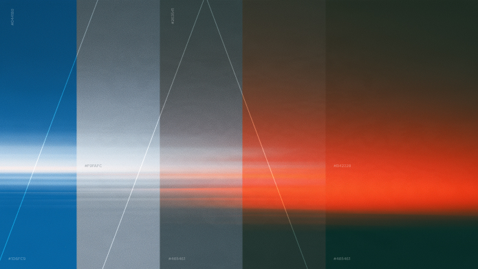

I’m currently leading experience strategy and design for monetization across AI-Native Search results and surfaces at Microsoft.

Project history
Close-
-
Spearheaded design for Toyota’s next-generation supply chain platform, unifying fragmented logistics tools into a cohesive system.
Defined future-state visions like the “Golden Thread,” and led AI-driven UX initiatives that improved vehicle ETA accuracy, exception visibility, and build optimization.
-

Lead design of the Aileron Design System to support customer-facing experiences, with its first pilot applied to the customer booking flow.
Standardized interaction patterns and components, ensuring accessibility, consistency, and cross-platform scalability while collaborating closely with engineering and brand stakeholders.
-
As Design Director for a multi-year initiative with Frito-Lay, I led efforts to reimagine how frontline employees and small-format retailers interact with the business—modernizing legacy systems and reshaping workflows to empower smarter stocking, faster delivery, and data-driven decision-making across 30,000+ retail stores.
-
In 2019 the financial advisory industry was facing new regulatory challenges. Edward Jones recognized the need to go beyond compliance, proactively enhancing the client experience and improving internal workflows.
I led design for portfolio management tools as part of a broader digital modernization. Worked closely with users and stakeholders to define a product strategy and experience vision that supported goal discovery, account opening, and investment management.
-
Verizon embarked on a digital transformation initiative aimed at improving user engagement, operational efficiency, and business value. As part of this effort, Verizon partnered with IBM to modernize IntradaPro, a decades-old billing and provisioning platform originally built in the 1980s.
-
As one of two senior designers on Janssen’s CarePath transformation, I helped consolidate 20+ fragmented product sites into a unified platform for patients and providers. I led UI design, defined the component library, and owned key experiences like the provider portal and onboarding—while also navigating regulatory approvals to ensure compliance across the system.
-
As an Art Director at Digitas in Boston, I honed my craft in concept development, creative collaboration, and digital illustration for clients like Bank of America, leading multi-channel campaigns and partnering cross-functionally to align UX with brand goals. My work spanned brand and campaign assets — one of which was even spoofed in an SNL sketch — but I increasingly found myself drawn past the execution and toward the strategy behind it, and toward collaborating more directly with the people actually consuming what I made.